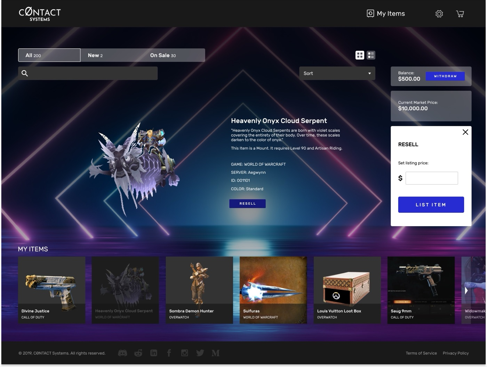
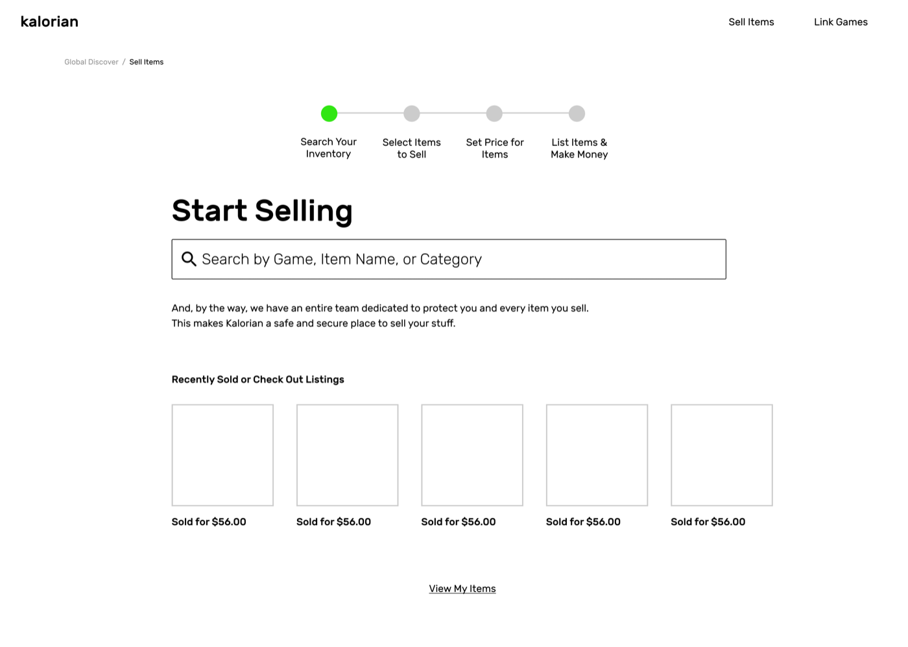
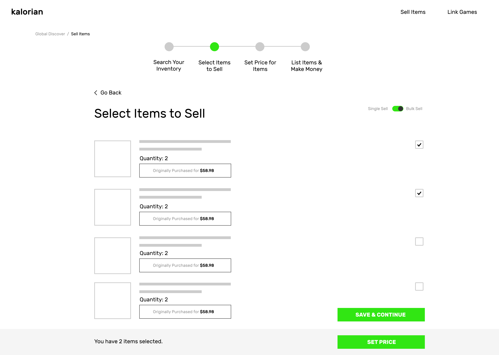
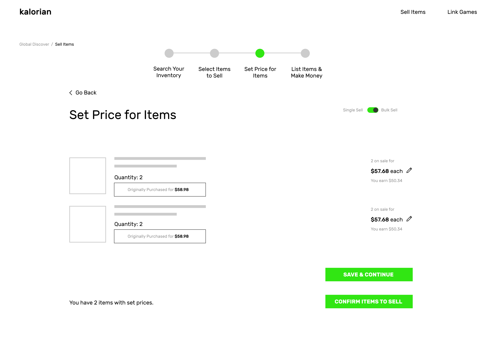
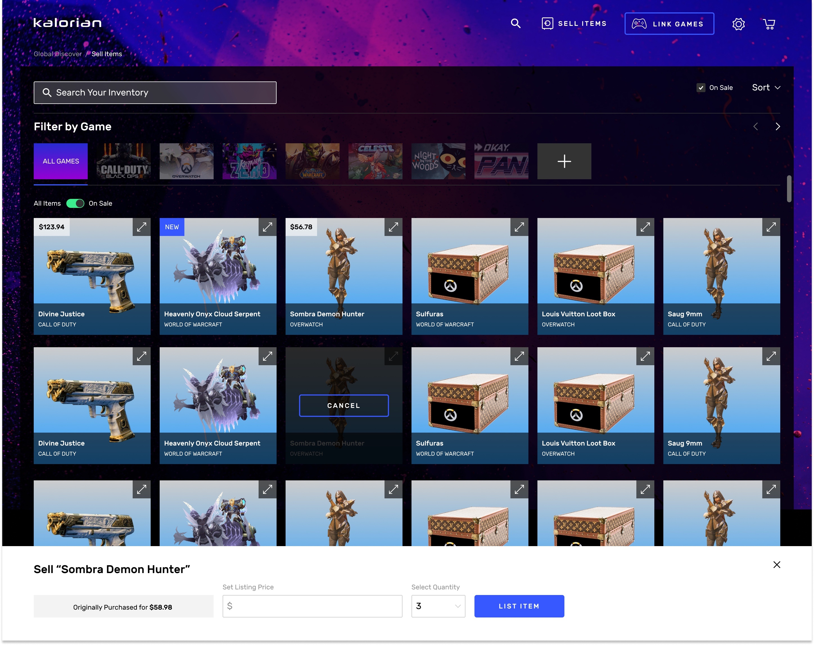
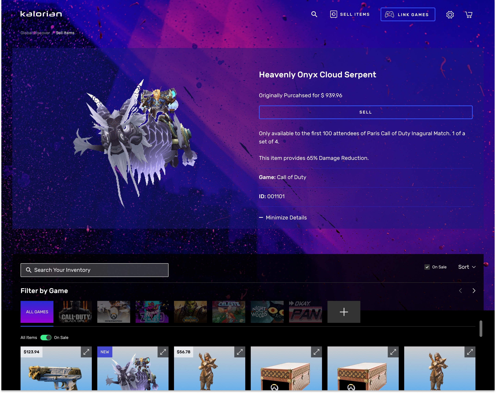
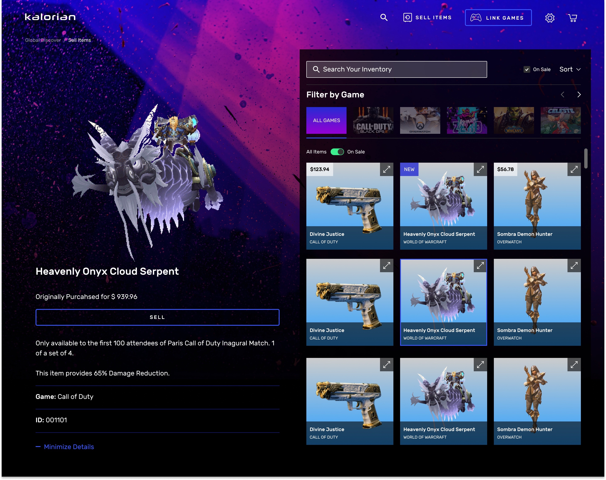
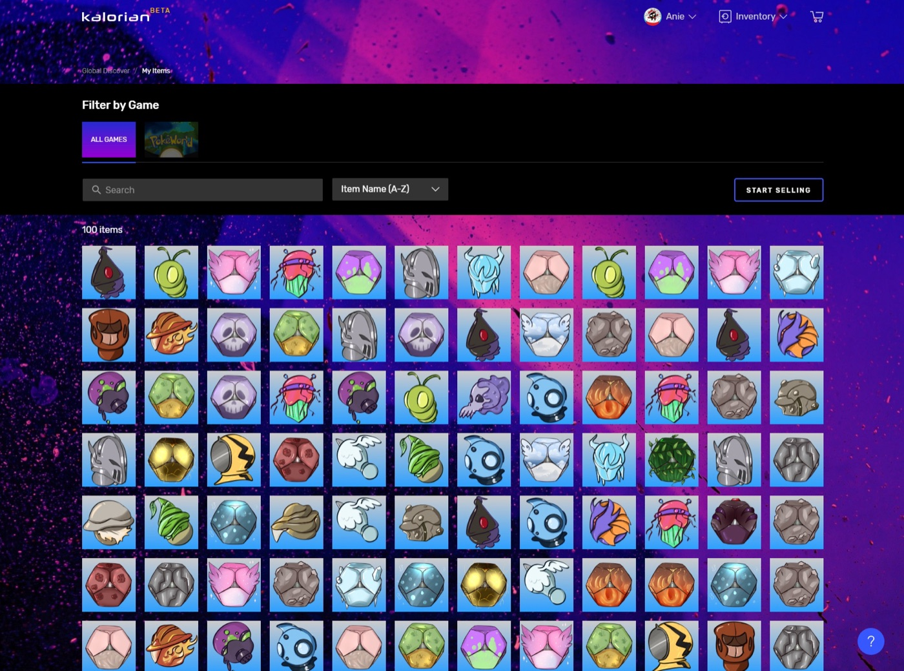

Inventory Management

Kalorian was an early-stage marketplace for buying and selling in-game items. As the only designer at the company, I rebuilt how sellers managed and listed their inventory, replacing a six-at-a-time carousel with a system built for people who could easily hold hundreds of items across multiple games.
The original inventory view displayed just six items at a time, forcing users to click carousel arrows repeatedly to browse a collection that could run into the hundreds or thousands. There was no way to sell more than one item at once, a serious limitation for gamers wanting to sell off large collections.

I ran competitive analysis on other resale platforms, stayed in active conversation with beta users through the company Discord, and researched how inventory is actually presented inside games. That last piece shaped the key insight: inventory screens inside games use small, unlabeled thumbnails because players already recognize their own items, unlike a storefront, where a stranger needs larger images and labels to browse unfamiliar things.







Gamers responded well to the new browsing and bulk-selling experience at launch, and we shipped a separate listings page where sellers could track and edit active listings in one place.
Kalorian lost its funding shortly after launch, during the 2020 shutdown, so there's no longer-term data on how this feature moved the business. I've kept it in my work because it's an honest example of solo-designer ownership under real constraints (from research through shipped product) even when the company didn't get the runway to prove it out.